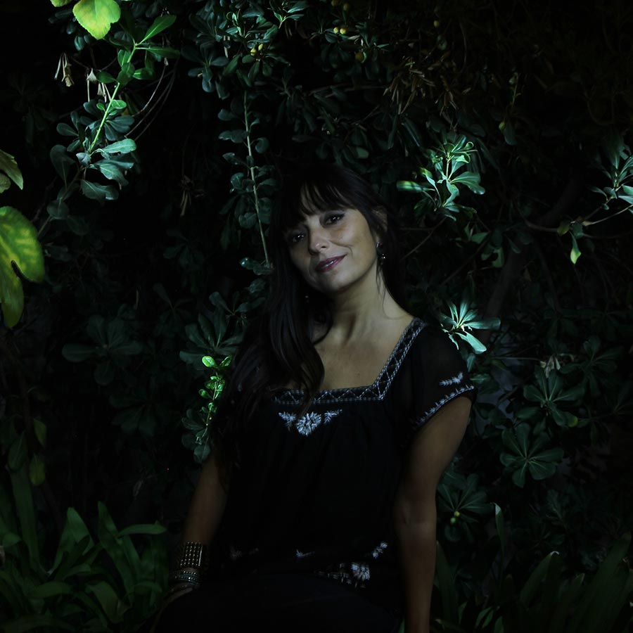

EL ÁRBOL DE LA VIDA
CHILE
Con un show diseñado especialmente para WOMAD 2017, Javiera & Los Imposibles y Ángel Parra Orrego celebran los 100 años de Violeta Parra.
Parte del repertorio del disco El Árbol de la Vida se sumará a un adelanto exclusivo de la versión revisitada de Las Últimas Composiciones de Violeta parra, el disco más emblemático de la autora que Ángel y Javiera se encuentran grabando junto a connotados invitados; Álex Anwandter, Álvaro López, ex Los Bunkers y Manuel García entre otros. Salió a la calle algunos meses antes de que se quitara la vida. Las Últimas Composiciones [1966] fue el último disco de Violeta Parra y donde aparecían dos de las canciones más universales de su repertorio: Gracias a la Vida y Volver a los 17. Los Cereceda Orrego [apellidos de nacimiento de Javiera y Ángel hijo] recrearán una pieza clave de la música popular chilena justo en el centenario de la fundamental artista.